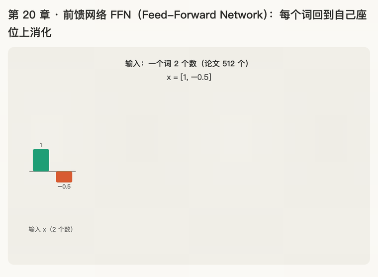

第 20 章 · 前馈网络 FFN：每个词回到自己座位上消化
本章回答：attention 子层之后，每层还有第二个子层 FFN。它做什么？为什么说它是"逐个位置"的？它的公式、尺寸是什么？现在的大模型把它改成了什么样？
讲解日期：2026-11-06 起 · 上一章：第 19 章 LayerNorm · 下一章：第 21 章 拼装：一个 Transformer 层
对应原文：materials/text/papers/attention-is-all-you-need-1706.03762.txt§3.3，L240–L251；CS336 handout §3.5.2（L1004 起）
本章缩写：Q / K / V = Query（查询）/ Key（键）/ Value（值）；\(d_{model}\)：d = dimension（维度），每个词向量有几个数（论文 512）；\(d_{ff}\)：ff = feed-forward，FFN 中间层有几个数（2048）；FFN = Feed-Forward Network（前馈网络）；LayerNorm / LN = Layer Normalization（层归一化）；RMSNorm = Root Mean Square Normalization（均方根归一化）；ReLU = Rectified Linear Unit（整流线性单元）；sigmoid（σ）= "S 形的"：把任何数压到 0 到 1 之间；SiLU = Sigmoid Linear Unit（又叫 Swish）：x × σ(x)；GLU = Gated Linear Unit（带闸门的线性单元）；SwiGLU = Swish + GLU；⊙ = element-wise product（逐个相乘，又叫 Hadamard 积）；max = maximum（取最大）；GPT = Generative Pre-trained Transformer（生成式预训练 Transformer）；LLaMA = Large Language Model Meta AI（Meta 的开源大模型）；PaLM = Pathways Language Model（Google 的大模型）；CS336 = Stanford 课程 CS 336（Computer Science 336，Language Modeling from Scratch）；代码里的名字（PyTorch、nn.Linear等）见附录"PyTorch 对照"。全部缩写见 附录 · 缩写与术语表
讲解
第一步：开完会，每个人回自己座位消化：FFN 是"逐个位置"的（2026-11-06）
接第 18 章：论文 L129–L131 说，每一层有两个子层：第一个是 multi-head self-attention，第二个是 "a simple, position-wise fully connected feed-forward network"，就是本章的 FFN。两个子层外面都套着残差（第 18 章）和 LayerNorm（第 19 章）。
类比：开会，然后回座位消化。
| 做什么 | 看不看别人 | |
|---|---|---|
| attention（第 4–13 章） | 开会：每个词去听别的词说了什么，把有用的信息拿过来 | 看：一个词的结果取决于整句话 |
| FFN（本章） | 回座位消化：每个词拿着开会记下的东西，自己琢磨、加工 | 不看：只用自己这一个词的 512 个数 |
CS336 handout L660–L662 就是这样分工的：每个 block 用 self-attention "aggregates information across the sequence"（在整句里汇集信息），用 feed-forward "non-linearly transforms it"（把信息加工一遍）。
"position-wise"（逐个位置）是什么意思
论文 L242–L244：FFN "is applied to each position separately and identically"。这句话有两个关键词：
- separately（分别）："狗""咬""人"三个词，一个一个送进 FFN，互不影响。"狗"的结果只看"狗"自己的向量。
- identically（一样地）：三个词用的是同一个 FFN、同一套参数。好比全班用同一套解题方法，各做各的卷子。
L248–L249 再补一句：同一层里各个位置的参数相同，但不同层的 FFN 参数不同（"they use different parameters from layer to layer"）。第 1 层的 FFN 和第 2 层的 FFN 是两套。
CS336 handout L678–L679 也说，RMSNorm 和 feed-forward 这类"position-wise"操作，对句子里每个位置做的事完全一样。第 19 章的 LayerNorm 也是这样：每个词只用自己的数算 μ、σ。
名字：FFN = Feed-Forward Network（前馈网络），feed-forward 的意思是数据只往前送：进来、算一遍、出去，不绕回头。
一句话：attention 让词和词之间交换信息；FFN 让每个词拿着换来的信息，用同一套方法各自加工一遍。
第二步：FFN 的公式，从里往外读；新工具 ReLU（2026-11-06）
论文 Eq. (2)（L246）：
L244 说它是 "two linear transformations with a ReLU activation in between"：两次转换，中间夹一个 ReLU。和第 19 章算 pre-LN 一样，从括号最里面往外读：
| 步骤 | 式子 | 做什么 | 学过吗 |
|---|---|---|---|
| ① | \(xW_1 + b_1\) | 第一次转换：词向量乘矩阵 \(W_1\)，再加一串数 \(b_1\) | 乘矩阵就是第 10 章的 \(\mathbf q = \mathbf x W^Q\) |
| ② | \(\max(0,\ \cdot\ )\) | ReLU：负数变成 0，正数不动 | 新的，下面讲 |
| ③ | \((\dots)W_2 + b_2\) | 第二次转换：再乘矩阵 \(W_2\)，再加 \(b_2\) | 同 ① |
\(b_1\)、\(b_2\) 是什么：b 是 bias（偏置），每个位置加一个数，作用像第 19 章的 β：整体挪一挪。它和 \(W_1\)、\(W_2\) 一样是训练时学出来的。
新工具：ReLU（Rectified Linear Unit）
\(\max(0, z)\) 的意思是：0 和 z 两个里取大的那个。
- z 是正数：z 比 0 大，取 z，原样通过。max(0, 3) = 3
- z 是负数：0 比 z 大，取 0，变成 0。max(0, −2) = 0
- z 是 0：两个一样，结果是 0
类比：门卫只放正数进门。 正数照常进，负数一律拦下、记成 0。
对一串数做 ReLU，就是每个数各自过一次门（和第 19 章乘 γ 一样，一个格子一个格子算）：
| 位置 | 第 ① 步算出的数 | ReLU 后 |
|---|---|---|
| 1 | 3 | 3 |
| 2 | −1 | 0 |
| 3 | 0.5 | 0.5 |
| 4 | −2 | 0 |
一句话：FFN = 转换一次 → 过 ReLU（负数变 0）→ 再转换一次。
插问：ReLU 这个词怎么来的（2026-11-06）
ReLU = Rectified Linear Unit，三个词各管一块：
| 词 | 中文 | 在 ReLU 里指什么 |
|---|---|---|
| Rectified | 整流（"改正、弄直"） | 来自电学：整流器把交流电里反方向（负）的那一半截掉，只让正向电流通过。ReLU 也是把负数截成 0 |
| Linear | 线性（画出来是直线） | 正数那一半原样输出：\(y = z\)，是一条直线 |
| Unit | 单元 | 神经网络里一个计算单元（一个"神经元"）。2048 个数，每个数就是一个单元，各自过一次 ReLU |
连起来：把负的一半截掉、正的一半保持直线的计算单元。画出来是一条折线：左边贴着 0 平躺，过了 0 往右上斜着走。
y
│ ╱
│ ╱
│ ╱
─┼──●──────── z
0 （左边全是 0）
顺带把本章其他缩写补全：
- FFN = Feed-Forward Network，前馈网络：Feed（送）+ Forward（往前）+ Network（网络），数据只往前送、不回头（第一步）。
- \(d_{ff}\) 里的 ff 就是 feed-forward：\(d_{ff}\) = FFN 中间那层有几个数（第三步）；\(d_{model}\) 是模型里每个词向量有几个数。
- GPT = Generative Pre-trained Transformer，生成式（Generative）、预训练（Pre-trained）的 Transformer（题 3 会用到 GPT-2）。
第三步：尺寸：512 → 2048 → 512，先摊开再收回（2026-11-06）
论文 L250–L251："The dimensionality of input and output is \(d_{model}\) = 512, and the inner-layer has dimensionality \(d_{ff}\) = 2048"。输入、输出都是 512 个数，中间那层是 2048 个数。
回忆第 10 章：\(\mathbf q = \mathbf x W^Q\)，\(W^Q\) 是 512 行 × 64 列，512 个数进去、64 个数出来。规律是：矩阵的行数 = 进去几个数，列数 = 出来几个数。
套到 FFN 上：
| 步骤 | 进去 | 矩阵 | 出来 |
|---|---|---|---|
| ① \(xW_1 + b_1\) | 512 个数 | \(W_1\)：512 行 × 2048 列 | 2048 个数 |
| ② ReLU | 2048 个数 | 没有矩阵，逐个过门 | 2048 个数（负的变 0） |
| ③ \((\dots)W_2 + b_2\) | 2048 个数 | \(W_2\)：2048 行 × 512 列 | 512 个数 |
类比：摊开草稿纸，算完再誊回答题卡。 答题卡只有 512 格（\(d_{model}\)）；回座位消化时，先摊开一张 2048 格的大草稿纸（\(d_{ff}\)），在上面展开、过滤（ReLU），最后把结论誊回 512 格。
为什么最后必须回到 512：第 18 章（R48）讲过，残差要做 \(x + \text{FFN}(x)\)，两个向量对位相加，必须一样长。
为什么中间是 2048：2048 = 512 × 4。CS336 handout L1022–L1024：中间层的宽度 "is typically 4x the input dimensionality"，一般是输入的 4 倍。草稿纸越大，能展开的"特征"越多，这是论文定下的经验值。
附带一个数字：\(W_1\) 有 512 × 2048 ≈ 105 万个数，\(W_2\) 也一样，一个 FFN 约 210 万个参数。第 10 章的 \(W^Q\) 只有 512 × 64 ≈ 3.3 万个。所以一层里的大部分参数都在 FFN 里。
一句话：FFN 先把 512 个数摊开成 2048 个（4 倍），过 ReLU，再收回 512 个，好和残差相加。
第四步：为什么中间非要夹一个 ReLU？（2026-11-06）
先看不夹 ReLU 会怎样。 为了好算，把向量换成一个数、矩阵换成一个数：第一次转换"× 2"，第二次转换"× 3"。
- 先 × 2，再 × 3：x = 1 → 2 → 6；x = 5 → 10 → 30
- 直接 × 6：x = 1 → 6；x = 5 → 30
一模一样。连着做两次转换，等于做一次转换（× 2 再 × 3 = × 6）。矩阵也是这样：\(xW_1W_2 = x(W_1W_2)\)，两个矩阵可以先乘成一个（加上 b 也一样，只是多加一个数）。那摊开到 2048 再收回来，就白折腾了：效果和一个 512 × 512 的矩阵没区别。
类比：两次换汇。 人民币先换美元、再换欧元，等于直接按一个汇率换成欧元。只要每一步都是"乘一个固定的数"，连着换几次都只相当于一次。
夹一个 ReLU 就不一样了：\(3 \times \max(0,\ 2x)\)
- x = 1：2 × 1 = 2 → ReLU 还是 2 → × 3 = 6
- x = −1：2 × (−1) = −2 → ReLU 变成 0 → × 3 = 0
正数时像"× 6"，负数时直接是 0。找不到一个固定的数，乘上去能同时得到这两个结果。 ReLU 在中间做了一个"如果……就……"的判断：正的放过去、负的拦下。这种判断，光靠乘矩阵做不出来。
名字：只会"乘一个数、加一个数"的叫线性（linear，画出来是直线）；ReLU 这种拐了个弯的叫非线性（non-linear）。CS336 handout L660–L662 说 FFN "non-linearly transforms it"，指的就是这个。
放回 2048 维：中间 2048 个数，每个都过一次 ReLU，就是 2048 个门卫各自判断"放不放"。第三步说"草稿纸越大能展开的特征越多"，靠的就是这些判断：每个位置管一种特征，是正的才往下传。
一句话：两次转换连着做 = 一次转换；中间夹 ReLU（非线性），才能做"正的放、负的拦"的判断，FFN 的两层才不白叠。
第五步：现在的大模型换了门卫：SiLU（2026-11-06）
CS336 handout §3.5.2 L1022–L1030：原论文是"两次转换夹一个 ReLU"，但现在的大模型（Llama 3、Qwen 2.5）做了两处改动：
- 换激活函数（activation function，就是夹在中间的那个"门卫"）：ReLU 换成 SiLU；
- 加一道闸门（gating mechanism）：叫 GLU，下一步讲。
两个合起来叫 SwiGLU。还顺手去掉了 b（L1029–L1030：自 PaLM、LLaMA 以来大多不用 bias）。本步只讲第 1 处。
名字先补全：
| 缩写 | 全称 | 意思 |
|---|---|---|
| sigmoid（σ） | sigmoid = "S 形的" | 曲线画出来像拉长的 S |
| SiLU | Sigmoid Linear Unit | 用 sigmoid 做出来的线性单元 |
| Swish | 不是缩写，英文"嗖的一声" | SiLU 的另一个名字（L1028："SiLU (often called Swish)"） |
| GLU | Gated Linear Unit | 带闸门的线性单元（下一步） |
| SwiGLU | Swish + GLU | 两样拼起来 |
先学一个零件：sigmoid \(\sigma(x)\)，把任何数压到 0 到 1 之间
用第 5–6 章学的 \(e^x\) 来看：
| x | \(e^{-x}\) | \(\sigma(x)\) | 感觉 |
|---|---|---|---|
| 4 | 很小（≈ 0.018） | 1 ÷ 1.018 ≈ 0.98 | 大的正数 → 接近 1 |
| 0 | \(e^0 = 1\) | 1 ÷ 2 = 0.5 | 正中间 |
| −4 | 很大（≈ 54.6） | 1 ÷ 55.6 ≈ 0.02 | 大的负数 → 接近 0 |
类比：调光旋钮。 ReLU 是开关，要么全开（原样）、要么全关（0）；sigmoid 是旋钮，从 0 到 1 连续地拧。
SiLU = x 乘上自己的旋钮（Eq. (5)，L1031–L1035）：
| x | \(\sigma(x)\) | SiLU(x) | ReLU(x) |
|---|---|---|---|
| 4 | 0.98 | 4 × 0.98 ≈ 3.93 | 4 |
| 1 | 0.73 | 0.73 | 1 |
| 0 | 0.5 | 0 × 0.5 = 0 | 0 |
| −1 | 0.27 | −0.27 | 0 |
| −4 | 0.02 | −0.07 | 0 |
- 大的正数：旋钮几乎拧满，SiLU ≈ x，和 ReLU 差不多；
- 大的负数：旋钮几乎关上，SiLU ≈ 0，也和 ReLU 差不多；
- 0 附近：ReLU 在 0 那里突然拐弯，SiLU 是圆滑地拐过去，负数那边还漏一点点（−0.27）。
L1036–L1037："similar to the ReLU activation function, but is smooth at zero"，和 ReLU 很像，但在 0 处是光滑的。
y ReLU：在 0 处折一下
│ ╱ SiLU：圆滑地弯过去，左边略微往下沉一点
│ ╱
│ ╱
─┼──●──────── x
0
为什么换：这是试出来的，不是推出来的。Shazeer 2020 实验发现这类组合在语言模型上效果更好（L1053–L1055），他本人在论文里还写了一句很有名的话，大意是"我们解释不了为什么有效，只能归功于老天保佑"（L1058–L1059）。
一句话：SiLU = x × σ(x)，正数大时 ≈ x，负数大时 ≈ 0，和 ReLU 像，但在 0 附近是圆滑的弯，不是硬拐。
第六步：第二处改动：加一道闸门 GLU；⊙ 是逐个相乘（2026-11-06）
ReLU 的局限：ReLU 里"放不放"和"放什么"是同一个数决定的：这个数是正的就放它自己，负的就拦。GLU（Gated Linear Unit，带闸门的线性单元）把这两件事拆成两条路。
原始 GLU（Dauphin et al. 2017，handout Eq. (6)，L1038–L1041）：
| 路 | 式子 | 管什么 | 范围 |
|---|---|---|---|
| 闸门路 | \(\sigma(W_1 x)\) | 放多少：每个位置一个音量旋钮 | 0～1（sigmoid，第五步） |
| 内容路 | \(W_2 x\) | 放什么：真正要传的内容 | 任意数 |
两条路都从同一个 x 出发，各乘一个矩阵；最后 \(\odot\) 把它们合起来。
新符号 ⊙：逐个相乘（element-wise product，又叫 Hadamard 积）。两串一样长的数，对位相乘，不加起来。
- 点积（第 2 章）：[1, 2] · [3, 4] = 1×3 + 2×4 = 11，一个数
- 逐个相乘：[1, 2] ⊙ [3, 4] = [1×3, 2×4] = [3, 8]，还是一串数
例子：闸门 σ(…) = [0.98, 0.5, 0.02]，内容 = [10, 10, 10]
| 位置 | 闸门（放多少） | 内容（放什么） | ⊙ 结果 |
|---|---|---|---|
| 1 | 0.98（几乎全开） | 10 | 9.8 |
| 2 | 0.5（开一半） | 10 | 5 |
| 3 | 0.02（几乎关上） | 10 | 0.2 |
类比：调音台。 每个声道有自己的内容（内容路），旁边有一个推子决定放多大声（闸门路）。推子推多少，也是看着输入自己算出来的。
SwiGLU：把闸门里的 σ 换成 SiLU（handout Eq. (7)，L1046–L1049）：
从里往外读：
- \(W_1 x\) → SiLU：闸门路
- \(W_3 x\)：内容路
- ⊙：逐个相乘
- \(W_2(\dots)\)：收回 \(d_{model}\)，好和残差相加
和原论文比：矩阵从 2 个变成 3 个（\(W_1, W_2, W_3\)），没有 b；ReLU 换成了"SiLU 闸门 × 内容"。Shazeer 2020 实验发现 SwiGLU 比 ReLU、比不带闸门的 SiLU 都好（L1053–L1055）。
（handout 把 x 写在矩阵右边：\(W_1 x\)；论文写在左边：\(xW_1\)。只是书写习惯不同，意思一样，矩阵的行列跟着反过来。）
一句话：GLU 把"放多少"（闸门）和"放什么"（内容）拆成两条路，用 ⊙ 逐个相乘合起来；SwiGLU 的闸门用 SiLU，一共三个矩阵。
第七步：SwiGLU 的中间层为什么是 \(\frac{8}{3} d_{model}\)，不是 4 倍（2026-11-06）
问题：原论文 FFN 有 2 个矩阵，SwiGLU 有 3 个。如果中间层还是 4 倍宽，参数就多了一半，和原版比就不公平了（多出来的好处可能只是因为"更大"）。
办法：把中间层缩窄，让参数总数不变。GLU variants 论文（Shazeer 2020，glu-variants-2002.05202.txt L74–L77）："To keep the number of parameters and the amount of computation constant, we reduce the number of hidden units \(d_{ff}\) … by a factor of \(\frac{2}{3}\)"，为了让参数和计算量不变，把 \(d_{ff}\) 乘 \(\frac{2}{3}\)。
算一遍（每个矩阵的参数 = 行 × 列）：
| 矩阵个数 | 每个矩阵 | 参数总数 | |
|---|---|---|---|
| 原版 | 2 个 | \(d_{model} \times 4d_{model}\) | \(2 \times 4\, d_{model}^2 = 8\, d_{model}^2\) |
| SwiGLU | 3 个 | \(d_{model} \times d_{ff}\) | \(3\, d_{model}\, d_{ff}\) |
要相等：\(3\, d_{model}\, d_{ff} = 8\, d_{model}^2\)，两边除以 \(3\, d_{model}\)，得
也就是 4 倍再乘 \(\frac{2}{3}\)：\(4 \times \frac{2}{3} = \frac{8}{3} \approx 2.67\) 倍。
类比：三个人分原来两个人的预算。 总预算不变，人从 2 个变成 3 个，每个人分到的就少一些。
实际取整：CS336 handout L1049（"canonically, \(d_{ff} = \frac{8}{3} d_{model}\)"）和 L1069–L1071：\(d_{ff}\) 取大约 \(\frac{8}{3} d_{model}\)，并且要是 64 的倍数，让硬件（GPU）算得快。比如 \(d_{model}\) = 512：512 × 8 ÷ 3 ≈ 1365.3，取 64 的倍数，用 1344（= 64 × 21）或 1408（= 64 × 22）。
一句话：SwiGLU 多了一个矩阵，就把中间层从 4 倍缩到 \(\frac{8}{3}\) 倍，保证参数总数和原版一样，比较才公平。
动画演示：摊开、过门卫、收回；SwiGLU 的闸门

可交互版：animations/20-ffn.html（要能点按钮、拖滑块，需要用本地服务打开，见 animations/README.md"跑起来看"；滑块把输入整体乘 k）。
一个词缩成 2 个数（论文 512），中间层 8 个数（4 倍，论文 2048）。矩阵里的数是编的，只看形状。
怎么看：
- 输入 x = [1, −0.5]；
- × \(W_1\)：摊开成 8 个数，有正有负（第三步）；
- ReLU：负的 4 个被拦成 0，正的原样通过（第二步）；
- × \(W_2\)：收回 2 个数，好和残差相加（第三步）；
- SwiGLU：紫色闸门 SiLU(\(W_1x\)) ⊙ 橙色内容 \(W_3x\) = 绿色结果，中间层缩到约 \(\frac{8}{3}\) 倍（这里 5 格），再 × \(W_2\) 收回（第五到七步）；
- 滑块：输入整体乘 k，下面画"输出第 1 个数"随 k 的变化：不夹激活是一条直线（两次转换 = 一次，第四步）；夹 ReLU 在 k = 0 处折一下；夹 SiLU 圆滑地弯过去。
练习与作答记录
题 1："狗咬人"三个词进到某一层的 FFN。 （a）FFN 算"狗"的输出时，会用到"人"的数字吗？ （b）在这一层里，三个词用的是同一套 FFN 参数，还是每个词各一套？
作答（2026-11-06）："a=不回，b=同一套"
✓（a）不会：FFN 是 separately，算"狗"只用"狗"自己的 512 个数；要和别的词交换信息，是 attention 的事。（b）同一套：identically，同一层里三个词共用一个 FFN；换一层才是另一套。
题 2：ReLU 就是 \(\max(0, z)\)。 （a）max(0, −3) 是多少？max(0, 5) 呢？ （b）对 [−4, 2, 0, −0.1, 7] 做 ReLU，结果是什么？
作答（2026-11-06）："0，5"
✓（a）max(0, −3) = 0（负数被拦下），max(0, 5) = 5（正数原样通过）。（b）还没答。
题 2（b）：对 [−4, 2, 0, −0.1, 7] 做 ReLU，结果是什么？
作答（2026-11-06）："0，2，0，0，7"
✓ −4 → 0，2 → 2，0 → 0，−0.1 → 0（再小的负数也被拦下），7 → 7。结果 [0, 2, 0, 0, 7]。
题 3： （a）\(W_2\) 是几行几列？为什么？ （b）GPT-2 small 的 \(d_{model}\) = 768。如果也按 4 倍，\(d_{ff}\) 是多少？\(W_1\) 是几行几列？
作答（2026-11-06）："2048，512，因为出要512，b=3072，768，3072"
✓（a）\(W_2\) 是 2048 行 × 512 列：进去 2048 个数（行数），出来要回到 512 个数（列数），好和残差相加。（b）\(d_{ff}\) = 768 × 4 = 3072，\(W_1\) 是 768 行 × 3072 列。
题 4： （a）一个数先 × 4、再 × 5。x = 2 时结果是多少？如果只做一步"× 某个数"，要乘几才能得到同样的结果？ （b）夹上 ReLU：\(5 \times \max(0,\ 4x)\)。x = 2 和 x = −2 时各是多少？还能找到一个固定的数 k，让 k × x 同时得到这两个结果吗？
作答（2026-11-06）："a=40,20,b=40,0,不能"
✓（a）2 × 4 = 8，8 × 5 = 40；一步 × 20 就行（4 × 5 = 20）：两次转换合成了一次。（b）x = 2：4 × 2 = 8 → ReLU 还是 8 → × 5 = 40；x = −2：−8 → ReLU 变 0 → 0。找不到 k：k × 2 = 40 要 k = 20，可 20 × (−2) = −40，不是 0。中间的 ReLU 让它不再是"乘一个固定的数"。
题 5：已知 σ(2) ≈ 0.88，σ(−2) ≈ 0.12。 （a）SiLU(2) 和 SiLU(−2) 各是多少？ （b）ReLU(2) 和 ReLU(−2) 各是多少？和（a）比，哪边差得多？
作答（2026-11-06）："1.76，0.24，b，2，0，a" → 改成 "1.76，0.24，b，2，0，b"
- SiLU(2) = 2 × 0.88 = 1.76 ✓
- SiLU(−2) ✗：答成 0.24，少了负号。−2 × 0.12 = −0.24：负数乘正数还是负数（第 19 章再练 4 讲过）。SiLU 在负数那边是"漏一点点负的"，不是变成正的。
- ReLU(2) = 2，ReLU(−2) = 0 ✓
- "哪边差得多"：这问是我出得不好，两边其实差得一样多。正数那边 2 − 1.76 = 0.24，负数那边 0 − (−0.24) = 0.24。真正想看的是：正数那边两者都接近 x；负数那边 ReLU 正好是 0，SiLU 是一个很小的负数（−0.24），这就是"圆滑地弯过去、左边略微往下沉"。
再练 5：已知 σ(3) ≈ 0.95，σ(−3) ≈ 0.05。SiLU(3) 和 SiLU(−3) 各是多少？（注意符号）
作答（2026-11-06）："1.9，-0.1"
符号对了 ✓（这次 SiLU(−3) 带上了负号），数值 ✗：两个都像是乘了 2 而不是 3（2 × 0.95 = 1.9，2 × 0.05 = 0.1）。SiLU(x) = x × σ(x)，前面乘的是 x 自己：
- SiLU(3) = 3 × 0.95 = 2.85
- SiLU(−3) = −3 × 0.05 = −0.15
再练 5 重做：已知 σ(4) ≈ 0.98，σ(−4) ≈ 0.02。SiLU(4) 和 SiLU(−4) 各是多少？（先写出"x × σ(x)"里的 x 是几，再乘）
作答（2026-11-06）："3。92，-0.08"
✓ SiLU(4) = 4 × 0.98 = 3.92；SiLU(−4) = −4 × 0.02 = −0.08。数值和符号都对了。
题 6： （a）闸门 = [1, 0.5, 0]，内容 = [4, 6, 8]，⊙ 结果是什么？ （b）[1, 2, 3] ⊙ [2, 2, 2] 和 [1, 2, 3] · [2, 2, 2]（点积）各是多少？ （c）SwiGLU 版的 FFN 有几个矩阵？原论文的 FFN 有几个？
作答（2026-11-06）："你帮我答问题，给出推理步骤"
✗ 没做，下面是推理过程。
（a）⊙ 就是对位相乘，一个格子一个格子算：
| 位置 | 闸门 | 内容 | 相乘 |
|---|---|---|---|
| 1 | 1（全开） | 4 | 1 × 4 = 4 |
| 2 | 0.5（开一半） | 6 | 0.5 × 6 = 3 |
| 3 | 0（关上） | 8 | 0 × 8 = 0 |
结果 [4, 3, 0]：闸门全开的原样通过，开一半的剩一半，关上的什么都过不去。
（b）先对位相乘，再看加不加：
- 对位相乘：1 × 2 = 2，2 × 2 = 4，3 × 2 = 6
- ⊙（逐个相乘）：到这里就停，结果是一串数 [2, 4, 6]
- ·（点积）：再把它们加起来 2 + 4 + 6 = 12，结果是一个数
两者的区别只有最后一步：点积加起来，⊙ 不加。
（c）数公式里的 W：
- SwiGLU：\(W_2\big(\text{SiLU}(W_1 x) \odot W_3 x\big)\)，有 \(W_1\)、\(W_2\)、\(W_3\)，3 个（闸门路一个、内容路一个、收回一个）
- 原论文：\(\max(0, xW_1 + b_1)W_2 + b_2\)，有 \(W_1\)、\(W_2\)，2 个（b 是一串数，不是矩阵）
多出来的那个就是"闸门路"和"内容路"分开以后多的一条路。这正好引出第七步：多了一个矩阵，参数怎么办？
题 7： （a）GPT-2 small 的 \(d_{model}\) = 768。如果换成 SwiGLU，按 \(\frac{8}{3}\) 倍，\(d_{ff}\) 是多少？（768 × 8 ÷ 3） （b）用一句话说：为什么 SwiGLU 的 \(d_{ff}\) 要比原版的 4 倍小？
作答（2026-11-06）："2048，b=因为数值分布合理，可以不需要那么多"
（a）✓ 768 × 8 = 6144，6144 ÷ 3 = 2048。
（b）✗ 原因不是数值分布，而是参数预算：SwiGLU 有 3 个矩阵，原版只有 2 个。中间层如果还是 4 倍宽，参数就多了一半；缩到 \(\frac{8}{3}\) 倍，3 个矩阵加起来正好和原版 2 个一样多，比较才公平（GLU variants 论文 L74–L77："To keep the number of parameters and the amount of computation constant"）。和"数值大小、分布"无关，那是第 19 章 LayerNorm 管的事。
再练 7：把 768 × 1024 叫作"一块"。 （a）原版：每个矩阵是 768 × 3072，是几块？2 个矩阵一共几块？ （b）SwiGLU：每个矩阵是 768 × 2048，是几块？3 个矩阵一共几块？
作答（2026-11-06）："3块，768*2048"
（a）每个矩阵 3 块 ✓（3072 = 1024 × 3），但没算总数：2 个矩阵 × 3 块 = 6 块。（b）没换算成块：2048 = 1024 × 2，所以每个矩阵是 2 块，3 个矩阵 × 2 块 = 6 块。
| 每个矩阵 | 几块 | 矩阵个数 | 一共 | |
|---|---|---|---|---|
| 原版 | 768 × 3072 | 3 | 2 | 6 块 |
| SwiGLU | 768 × 2048 | 2 | 3 | 6 块 |
一样多，这就是 \(\frac{8}{3}\) 的用意：矩阵多一个，每个变窄，总参数不变。
口诀
开会靠 attention，消化靠 FFN；每个词各算各的，全班同一套方法；
先摊开四倍，过门卫负数变 0，再收回原长好相加；
两次转换连着做等于一次，中间夹个弯才有用；
新版换 SiLU 加闸门，三个矩阵各变窄，八分之三保预算。
本章复习卡片
- R57 · FFN 是 position-wise：每个词分别算、共用同一套参数；不同层参数不同（题 1）
- R58 · ReLU = max(0, z)：负数变 0，正数不动；FFN 公式从里往外读（题 2）
- R59 · ReLU 全称 Rectified Linear Unit：整流 / 线性 / 单元各指什么（插问）
- R60 · FFN 尺寸：\(W_1\) 512 × 2048、\(W_2\) 2048 × 512；\(d_{ff}\) = 4 × \(d_{model}\)（题 3）
- R61 · 为什么要 ReLU：两次转换连着做 = 一次（× 4 再 × 5 = × 20）；夹上 ReLU 就不是一个固定的数了（题 4）
- R62 · SiLU = x × σ(x)：SiLU(2) ≈ 1.76、SiLU(−2) ≈ −0.24（负号别丢）；和 ReLU 比，负数那边漏一点负的（题 5，符号错）
- R63 · ⊙ 逐个相乘 vs 点积；GLU 闸门 × 内容；SwiGLU 三个矩阵（题 6，没做）
- R64 · SwiGLU 的 \(d_{ff} = \frac{8}{3} d_{model}\)：多一个矩阵，缩窄中间层让参数总数不变（题 7，原因答错）
附录 · 延伸阅读
留给以后深入学习用，不影响本章主线。★ 是建议先读的。
- 本地论文的文本版在materials/text/papers/，表里的行号就是指这个文本版。
- CS336 handout 在cs336-spring2025/materials/text/cs336_spring2025_assignment1_basics.txt。
推荐阅读
| 读什么 | 读哪里 | 读它为了什么 |
|---|---|---|
| ★ Attention Is All You Need | §3.1 L129–L131；§3.3 L240–L251 | 本章原文：每层第二个子层是 position-wise FFN；"separately and identically"（L243）；Eq. (2) \(\max(0, xW_1+b_1)W_2+b_2\)（L246）；同层共用、不同层不同（L248–L249）；512 / 2048（L250–L251） |
| ★ CS336 assignment 1 handout | L660–L662、L678–L679；§3.5.2 L1004–L1075 | 动手要写的版本：attention 汇集、FFN 非线性加工；SiLU Eq. (5)、GLU Eq. (6)、SwiGLU Eq. (7)；\(d_{ff} \approx \frac{8}{3} d_{model}\) 且是 64 的倍数；作业 Problem (positionwise_feedforward) |
| ★ Shazeer 2020，GLU Variants Improve Transformer | glu-variants-2002.05202.txt L60–L77；L159 |
SwiGLU 的出处：几种 GLU 变体的公式（Eq. (6)）；为什么 \(d_{ff}\) 乘 \(\frac{2}{3}\)（L74–L77）；"divine benevolence"那句话 |
| Geva et al. 2021，Transformer Feed-Forward Layers Are Key-Value Memories | 全文（本地没有文本版） | 进阶视角：\(W_1\) 的每一列像一个"key"、\(W_2\) 的每一行像一个"value"，FFN 像一张记忆表；阶段 A7 可解释性时读 |
数学原理
- 线性的叠加还是线性：\((xW_1 + b_1)W_2 + b_2 = x(W_1W_2) + (b_1W_2 + b_2)\)，等于一个矩阵 \(W_1W_2\) 加一个偏置。所以没有激活函数，两层 = 一层（第四步、题 4）。
- ReLU 是分段线性：\(\max(0, z)\) 在 z > 0 和 z < 0 两边各是一条直线，只在 0 处拐弯；2048 个这样的拐点叠起来，能拼出很复杂的折线形状。
- sigmoid 的性质：\(\sigma(0) = 0.5\)；\(\sigma(-x) = 1 - \sigma(x)\)（σ(2) ≈ 0.88，σ(−2) ≈ 0.12，加起来是 1）；x 很大时 → 1，很小时 → 0。
- SiLU 和 ReLU 的差是对称的：SiLU(x) − ReLU(x) 在 x 和 −x 处一样（题 5：x = ±2 时都差 −0.24）。
- 参数相等的推导：\(2 \cdot d_{model} \cdot 4d_{model} = 3 \cdot d_{model} \cdot d_{ff} \Rightarrow d_{ff} = \frac{8}{3}d_{model}\)（第七步、题 7）。
- 参数主要在 FFN：一层里 attention 的 \(W^Q, W^K, W^V, W^O\) 共 \(4d_{model}^2\)，FFN 共 \(8d_{model}^2\)，FFN 约占三分之二。
公式清单
| 公式 | 意思 |
|---|---|
| \(\text{FFN}(x) = \max(0, xW_1+b_1)W_2+b_2\) | 原论文 FFN，Eq. (2) |
| \(W_1: d_{model} \times d_{ff}\)，\(W_2: d_{ff} \times d_{model}\)，\(d_{ff} = 4d_{model}\) | 尺寸：512 → 2048 → 512 |
| \(\text{ReLU}(z) = \max(0, z)\) | 负数变 0，正数不动 |
| \(\sigma(x) = \frac{1}{1+e^{-x}}\) | sigmoid：压到 0～1 |
| \(\text{SiLU}(x) = x \cdot \sigma(x)\) | 圆滑版 ReLU（Swish） |
| \(\text{GLU}(x) = \sigma(W_1x) \odot W_2x\) | 闸门 ⊙ 内容 |
| \(\text{FFN}_{\text{SwiGLU}}(x) = W_2(\text{SiLU}(W_1x) \odot W_3x)\) | 现在的大模型用的 FFN，三个矩阵、没有 b |
| \(d_{ff} = \frac{8}{3}d_{model}\)（取 64 的倍数） | SwiGLU 的中间层宽度，保参数不变 |
PyTorch 对照：把本章的数字用代码算一遍
代码在仓库本地
transformer-deep-dive/solutions/chapter-code/ch20_ffn.py，配套测试tests/test_ch18_21.py（在线版不带代码文件，下面摘了关键几行）。Mac 上直接能跑，不需要 GPU：
bash cd transformer-deep-dive/solutions/chapter-code uv run python ch20_ffn.py
讲义 ↔ 代码：
| 讲义 | 公式 / 说法 | PyTorch 写法 | 跑出来 |
|---|---|---|---|
| ReLU | \(\max(0, z)\) | torch.relu(z) |
[3, −1, 0.5, −2] → [3, 0, 0.5, 0] |
| FFN | \(\max(0, xW_1+b_1)W_2+b_2\) | nn.Sequential(Linear, ReLU, Linear) |
3 × 512 → 3 × 2048 → 3 × 512 |
| 逐个位置 | 每个词单独算 | 整句 vs 一行一行 | 完全一样 |
| 参数 | \(W_1\)、\(W_2\) 各 512 × 2048 | sum(p.numel() ...) |
不算 bias 2,097,152 ≈ 210 万 |
| 两次转换 = 一次 | \(xW_1W_2 = x(W_1W_2)\) | (v @ w1) @ w2 vs v @ (w1 @ w2) |
相等；夹 ReLU 后不相等 |
| sigmoid、SiLU | \(\sigma(x)\)、\(x\sigma(x)\) | torch.sigmoid、F.silu |
x = −1：0.27、−0.27 |
| GLU 闸门 | \(\odot\) | gate * content |
[9.8, 5, 0.2] |
| SwiGLU 的 \(d_{ff}\) | \(\tfrac83 d_{model}\) 取 64 的倍数 | swiglu_d_ff(512) |
1344；参数 2,064,384，和原版差不多 |
关键几行：
ffn = nn.Sequential(nn.Linear(512, 2048), nn.ReLU(), nn.Linear(2048, 512))
class SwiGLU(nn.Module):
def forward(self, x):
return self.w2(F.silu(self.w1(x)) * self.w3(x)) # * 就是 ⊙
代码里才看得到的：
- "逐个位置"在代码里是白送的：
nn.Linear只对最后一维（512 个数）做乘法，前面有几个词都一样处理，所以整句一起算和一个词一个词算，结果完全相同。 nn.Sequential：把几层按顺序串起来，进去的数依次穿过每一层。原版 FFN 正好是"线性 → ReLU → 线性"三步。- SwiGLU 要自己写一个
nn.Module：它有两条路（闸门、内容）再逐个相乘，不是简单串起来，Sequential装不下。CS336 a1 要写的就是这个类。